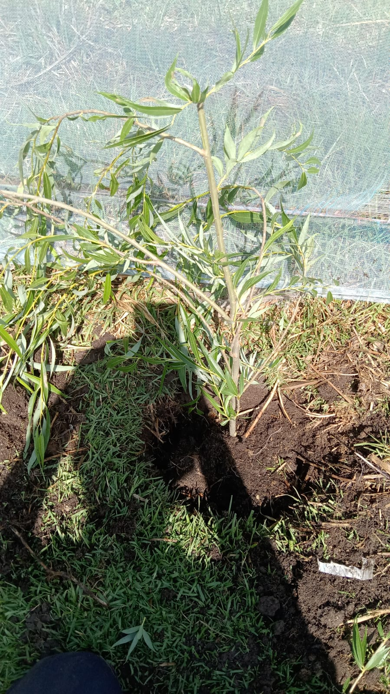

Beneficios Ambientales de la Reforestación
1. Mejora de la calidad del aire:
- Los árboles absorben dióxido de carbono y liberan oxígeno, lo que ayuda a reducir la contaminación del aire y mitigar el cambio climátic.
2.Aumento de la biodiversidad:
-La reforestación ayuda a restaurar ecosistemas degradados y proporciona hábitats para diversas especies de plantas y animales
3. Regulación del clima:
- Los árboles proporcionan sombra, reducen la temperatura del suelo y ayudan a regular el ciclo del agua, lo que contribuye a mitigar los efectos del cambio climático.
4. Prevención de la erosión:
-Las raíces de los árboles ayudan a retener el suelo, evitando la erosión causada por el viento y el agua.
5.Mejora de la calidad del agua
- Los árboles filtran el agua de lluvia, reduciendo la contaminación y mejorando la calidad del agua de los ríos y acuíferos.
6. Absorción de carbono:
-Los árboles absorben dióxido de carbono de la atmósfera a través de la fotosíntesis, lo que ayuda a mitigar el calentamiento globa.
